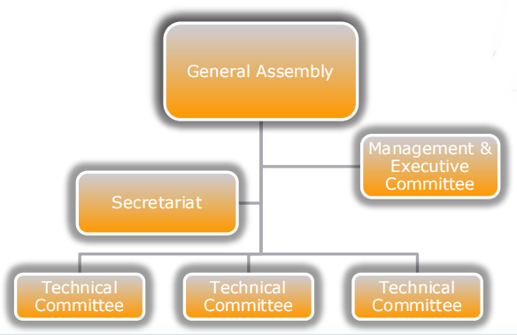

The history of the creation and
development of JavaScript
Prepared by Aliaksei Barysewich
Marc Andreessen
On April 22, 1993, he helped the National Center for Supercomputing Applications at the University of Illinois to launch Mosaic (NCSA Mosaic) - one of the first web browsers with a graphical interface.
After his graduation from UIUC in April 1993, Andreessen founded Mosaic Communications Corporation.
On October 13, 1994, The Mosaic Communications Corporation launched, under the name Mosaic Netscape 0.9, the first one in a series of browsers.
To avoid copyright issues on November 14, 1994 the company changed its name to Netscape Communications Corporation and renamed its product. It new name was Netscape Navigator.
Microsoft's reply, Internet Explorer, appeared on the horizon.

In 1995 Netscape brokered a deal with another Microsoft competitor, Sun Microsystems, which was debuting a major programming language, Java.
It was at this point that Brendan Eich was famously contracted by Netscape to develop in an extremely short time a language that was supposed to "look like Java".
He created a prototype in 10 days.
After development of the prototype, this language was called Mocha.
A better release was made in September 1995 and it name was changed on LiveScript.
The final name JavaScript was gotten in December 1995. It name did help the language feed on the popularity of the Java programming language itself.

JavaScript™
The word "JavaScript" was originally trademarked by Sun Microsystem. Later, after acquiring the company Sun Microsystem by Oracle, all trademarks were transferred to it.
Thus, currently, Oracle owns the trademark of JavaScript.
ECMA International (formally European Computer Manufacturers Association) is a non-profit organization that develops standards in computer hardware, communications, and programming languages.
On the web it is famous for being the organization which maintain the ECMA-262 specification or ECMAScript which is the core specification for the JavaScript.
The ECMAScript specification is a standardized specification of a JavaScript.
ECMA Structure
The Association consists of:
- General Assembly
- Ordinary (Full) members
- Associate members
- Small and Medium-sized Enterprise members
- Small Private Companies members
- Non-profit-making organizations members
- Management
- Secretariat
- Executive Committee
- Technical Committees and Task Groups
Ordinary members are companies which have interest and experience in matters related to one or more Technical Committees of the Association, and which wish to exert the right to vote at the General Assembly and to exert other exclusive rights defined in the By-laws and Rules.

Associate members are companies which have interest and experience in matters related to one or more of the Technical Committees of the Association but without the right to vote in the General Assembly.
Small and Medium-sized Enterprise members are companies which have similar interests as an associate member and a global, annual, turnover of less than Swiss Francs 100 000 000.

Small Private Companies members are companies or other legal for-profit organizations with no more than 25 employees and a global, annual, turnover of less than Swiss Francs 10 000 000.
NFP members are non-profit-making organizations. If an NFP is an organization with several organizations as members, then normally it can only become an NFP member in Ecma if its members do not qualify for Company membership in ECMA.
The Executive Committee makes recommendations to the General Assembly regarding business, legal and managerial matters and regarding the formation, activities, reorganization or dissolution of Technical Committees. It consists of individuals elected annually by the General Assembly.
Technical work is carried out by Technical Committees and Task Groups. A Technical Committee or a Task Group addresses a particular area or topic. ECMA members are encouraged to participate in the work of Technical Committees and Task Groups.
What is TC 39?
TC39 means Technical Committee number 39. It is part of ECMA International. It works on the standardization of the general purpose, cross platform, vendor-neutral programming language that is ECMAScript. This includes the language syntax, semantics, libraries, and complementary technologies that support the language.
TC 39 works on:
- Maintaining and updating the standard for the ECMAScript programming language.
- Identifying, developing and maintaining standards for libraries that extend the capabilities of ECMAScript.
- Developing test suites that may be used to verify correct implementation of these standards.
- Contributing with selected standards to the ISO/IEC JTC 1 committee.
- Evaluating and considering proposals for complementary or additional technologies.
Stages
Changes to the language are developed by way of a process which provides guidelines for evolving an addition from an idea to a fully specified feature, complete with acceptance tests and multiple implementations. There are five stages, and the TC39 committee must approve acceptance for each stage.
Proposals at stage 1 and beyond should be owned by the TC39 committee. Upon proposal acceptance, any externally-owned repositories should be transferred by following the onboarding instructions.
Stage 0: Strawperson
Stage 1: Proposal
Stage 2: Draft
Stage 3: Candidate
Stage 4: Finished
What’s Next?
Proposals that make their way through to stage 4 will be included in the next revision of ECMAScript. When the spec goes through its yearly ratification as a standard, the proposal is ratified as part of it.
Input into the process
Ideas for evolving the ECMAScript language are accepted in any form. Any discussion, idea, or proposal for a change or addition which has not been submitted as a formal proposal is considered to be a “strawperson” (stage 0) and has no acceptance requirements. Such submissions must either come from TC39 delegates or from non-delegates who have registered via ECMA International.
Spec revisions and scheduling
TC39 intends to submit a specification to the ECMA General Assembly for ratification in July of each year. The following is an approximate timeline for producing a new spec revision:
- February 1: Candidate Draft is produced.
- February - March: 60-day royalty-free opt-out period.
- March TC39 Meeting: stage 4 proposals are incorporated, final semantics are approved, and the new spec version is branched from master. Only editorial changes are accepted from this point forward.
- April-June: ECMA CC and ECMA GA review period.
- July: Approval of new standard by the ECMA General Assembly
There are twelve editions of ECMA-262 published. Work on version 13 of the standard was finalized in June 2022.
The 123rd General Assembly held in Geneva on 22-23 June 2022 approved the following documents: ECMA-262 13th edition – ECMAScript® 2022 Language Specification
The Latest ES13 JavaScript Features
- Class field declarations
- Private methods and fields
- Top level await
- Static class fields and static private methods
- Class static block
- Ergonomic brand checks for private fields
- at() method for indexing
- RegExp match indices
- Object.hasOwn() method
- Error cause
- Array find from last
Class field declarations
class Car {
color = 'blue';
age = 2;
}
const car = new Car();
console.log(car.color); // blue
console.log(car.age); // 2
Private methods and fields
class User {
name = 'Tom';
#lastName = 'Brown';
getFullName() {
return `${this.name} ${this.#lastName}`;
}
}
const user = new User();
user.name; // "Tom"
user.getFullName(); // "Tom Brown"
user.#lastName;
// SyntaxError - cannot be accessed or modified from outside
the class
Top level await
const strings = await import(`./example.mjs`);
const resource = await Promise.any([
fetch('http://example1.com'),
fetch('http://example2.com'),
]);